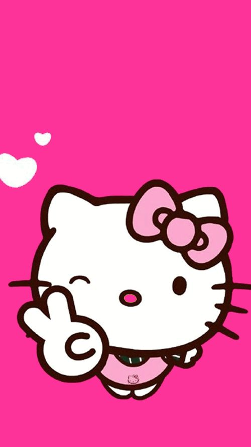

Olá Mundo
Hello Kitty
Seja bem vindo ao meu primeiro site da hello kitty!
Hello Kitty é uma personagem criada pela empresa japonesa Sanrio em 1974. Com seu laço vermelho e expressão doce, ela rapidamente se tornou um ícone da cultura pop. Apesar de parecer um gatinho, Hello Kitty é oficialmente descrita como uma garotinha britânica chamada Kitty White. Ela simboliza amizade, fofura e simplicidade, conquistando fãs de todas as idades ao redor do mundo. Com presença em roupas, brinquedos, desenhos animados e até aviões, Hello Kitty é muito mais que um personagem — é um fenômeno global.